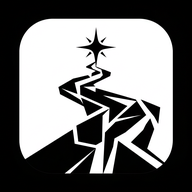

Enter the unlock code you received with your access link.
Your transition companion
Your next step
See all stepsA gentle reminder
Be honest with yourself at the end of the day. This app only monitors your progress—your decisions and your pace are always yours.
Your roadmap
Go at your own pace. Tick a step when you've done it.
Pick a few small activities for today — from the ideas below or your own. Tap Done when you've done one.
Tap one to add it to today.
It happens
How this works: if you tried to reconnect with your ex, or checked their profile, tap the big button below. Tap it once each time it happens.
That's all — nothing to write. Your moving-on percentage goes down a little (5%) so you can see things honestly, and you can climb right back up.
Now do one small thing for yourself. Tap an idea to add it to today:
End of day
Be honest with yourself at the end of the day. This app only monitors your progress—your decisions and your pace are always yours.
A question to sit with
Think about it, or say your answer out loud. Writing is optional.
Small wins
Add small things you want to do. Each one you finish gives your progress a small boost (+1%, once per task). Everything is saved on your phone to keep you on track.
Keep it safe
Your progress lives only on this phone. Copy your backup and save it somewhere safe (a note to yourself works), or paste a backup here to restore it on a new phone.
This is a 30–90 day companion. The goal is to build momentum and graduate — a life that doesn't need this app. Be kind to yourself.